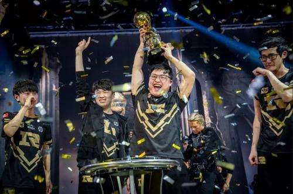

“也许有一天，我是说，也许。也许，我们会对英雄联盟、电子竞技失去信心，因为韩国的宰制直到今日都还在持续，但我觉得，不是今天。也许有一天，这些我们所热爱的选手，他们没有办法再坚持在这个舞台上了，但我觉得，也不是今天。今天RNG与SKT战至第五局，让我们走进召唤师峡谷……”这是解说记得在英雄联盟S7全球总决赛半决赛的经典语录。
2017年10月28日，远古巨龙的最后一声咆哮，没能阻止巨大的加里奥石像从天而降。“香锅，快走啊”“小狗倒了”，现场解说强忍泪水。可无奈，一次又一次的英雄登场，打破了人们对鸟巢决战的最后一丝幻想。每个人都渴求LPL能真正拿到一次S赛冠军，为自己曾经所热爱的青春画上圆满的句点，但在残酷的现实面前，所有人似乎都在刻意回避冠军的话题。
2018年同样被成为“最有希望的一年”，这一年，LPL赛区获得了MSI冠军、洲际赛冠军。在雅加达亚运会上，伴随着嘹亮的国歌声，五星红旗冉冉升起，向世界宣告——“电子竞技，五个中国人，同样能赢。”我们只差最后的那一座奖杯，拿下2018年的大满贯，可是那座叫做“S赛”的大山，仍然遥不可及。八强赛上，被我们寄予厚望的RNG兵败G2，EDG也惨遭淘汰，只剩下IG要与LCK一号种子KT血战。命运似乎总爱和我们开玩笑——第三局只差最后一剑，KT就能被IG送走，之后被追平比分。熟悉的第五局战歌想起，当我们所有人以为这就是今年LPL征程的终点，比赛里Jacklove的向前闪现，漫天逆羽保留了最后一丝希望。这似乎就是命运对IG 的最后一次考验。“一往无前釜山行，拨开云雾见光明。”四强赛上的“前身下凡一捶四”、决赛场上的“势不可挡”，IG最终还是翻过了那座山，登峰造极。
2018年11月3日，你是否还记得仁川那场金色的雨，是否还记得屏幕前的热血沸腾、振臂高呼？
2019年，LCK、LEC赛区卷土重来，LPL赛区MSI败北，洲际赛失败。当我们觉得这些所热爱的选手要放弃的时候，他们没有，高强度的Rank使他们继续保持热血。八强赛上的天使荣光，阻挡了LCK最大黑马的前进。就像主题曲里说的那样——凤凰中将涅槃，巴黎决赛场馆现场的鸦雀无声，向世界宣告：这就是LPL.。一次比赛的失利，没有关系。电子竞技，最需要的是我们的热爱。
今年是不寻常的一年，LPL是承载竞技精神的应许之地，10月31日，或许那天作为尾款人的你焦急等待着零点钟声的到来，但全世界热爱电子竞技的人们目光齐聚上海浦东足球场，等待着那一场比赛的结果。结果也许差强人意，五位海边少年终究没能捧起那座梦一般的奖杯。电子竞技，在大多数人看来，成绩说话。但是决赛场上的”Penta Kill”，创造了历史，“满堂花醉三千客，一剑霜寒十四州。”就像赛前LCK选手Showmaker说的那样“在LCK两年没进过全球总决赛决赛，重铸LCK的荣光，我辈义不容辞。”或许，我们将再次变成挑战者，但少年豪气，必将卷土重来。
即使口罩遮住了年轻的没面孔，而热血的心却依然跳动，我们的社交距离被紧张的局势拉远，但呐喊的时差却因激情的操作缩短。未来亦是未知，峡谷里的瞬间胜败，人生中的起落浮沉充满不确定性。命运无法BP，但青春永远只有一轮，瞄准此刻的灵魂锚点，带着面对未知的自信，去前进，去战斗。
因为，热爱不息，战斗不止。